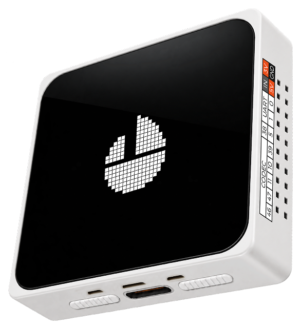

New for the ESP-Mosaico
OpenCarMind
EdgeOS 2.0.0
It decides what runs, when and how fast.
A small operating-system layer for the ESP-Mosaico board.
2 models on one chip
CarMind R.E.V and E.V, switch in Settings, each admitted against its deadline

68 s
boot health check rated good
81 KB
lowest free internal RAM
in any phase, target 60 KB
4.2 ms
model response, 1,000 ms deadline
16
touch apps on the screen
128 MB
NAND for the drive logs
On board
Boot health check · Wi-Fi held until healthy · Internal RAM above 60 KB in every phase · Battery protection
Firmware
Wi-Fi joined on the screen, only for the clock · Light and dark themes · Desktop app over USB · Alarm banner: tap or swipe to clear
Graphics accelerator (PPA) onNEXTActive E.V, a model that learns more of your car, is in the works for the ESP-Mosaico
Board photo: Espressif Systems, CC BY-SA 4.0. Screen: captured on the board.